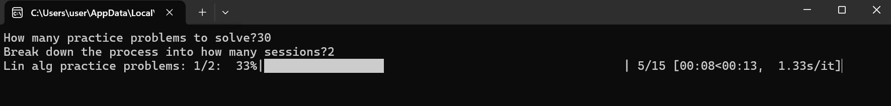

Manually tracking progress of long mathematics problem session was repetitive and more visual feedback would we encouraging
A script that breaks down a total number of problems into smaller sets. The user can track progress via a progress bar, and it provides control for skipping or advancing problems with keyboard input (Shift+Q to increase the count).
The user can monitor their progress in solving practice problems, and the real-time input allows for quick adjustments to the problem-solving pace.
Relies on the keyboard library, which may require administrator privileges. Does not track time spent on each problem, only progress. Requires a physical keyboard and may not work in environments where keyboard events are blocked.
Add a timer to track time spent per session or problem. Implement customizable inputs for various problem sets and sessions. Create an interface for logging and analyzing performance over time.